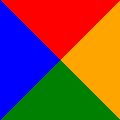

|
CSS-таблицы (display: table/table-cell)
Аналогом тега «table» является свойство «display: table», а тега «td» – «display: table-cell». Свойство «table» задается для родителя элементов, которые необходимо выравнивать, а свойство «table-cell» задается самим элементам. Свойство «table» ведет себя как блочный элемент, т.е. растягивается по всей ширине родителя, а также данное свойство позволяет выравнивать ячейки под одну высоту. Используя CSS-таблицы можно легко изменить структуру документа просто переназначив свойство «display», что не скажешь об HTML-таблицах.
Значение «table-cell» не работает, если нет элементов со значениями свойства «table»!!!
Свойство «float» (поплавки)
Свойство «float» используется исключительно при необходимости обтекания текстом какого-то элемента, равнять элементы таким свойством не рекомендуется. Значения свойства «float: right/left/none» указывают к какому краю родительского элемента будет приклеен элемент, у которого установлено это свойство. Если задать «float» для двух элементов одного родителя, то они приклеятся друг к другу. Также можно отметить, что строчные элементы обтекают элемент со свойством «float», а блочные его игнорируют, т.е. занимают его место. Элементы-поплавки не влияют на размер их родителя, т.е. если в родительском элементе не будет находится текст, то родитель не будет растягиваться под элементы-поплавки, которые в нем находятся. Для того, чтобы элемент отталкивался от float-элементов необходимо задать свойство «clear», имеющего значения: right, left, both, none. Делается это таким образом, если у родителя есть два элемента, где у одного из них задано, например, свойство «float: left», а у другого свойство «clear: right» (означает, что игнорировать элемент-поплавок, находящийся справа), то получится так, что текст будет не обтекать справа float-элемент, расположиться внизу этого элемента. Позиционирование (свойство «position»)
Свойство «position» устанавливает способ позиционирования элемента относительно окна браузера или других объектов на веб-странице. Данное свойство влияет на дополнительные свойства (left, top, right и bottom) в зависимости какое значение стоит в свойстве «position». Существуют такие значения свойства «position»:
Любые позиционированные элементы на веб-странице могут накладываться друг на друга в определенном порядке, имитируя тем самым третье измерение, перпендикулярное экрану. Каждый элемент может находиться как ниже, так и выше других объектов веб-страницы, их размещением по z-оси и управляет «z-index». Это свойство работает только для элементов, у которых значение «position» задано, как «absolute», «fixed» или «relative». В качестве значения используются целые числа (положительные, отрицательные и ноль). Чем больше значение, тем выше находится элемент по сравнению с теми элементами, у которых оно меньше. При равном значении «z-index», на переднем плане находится тот элемент, который в коде HTML описан ниже. Подход позиционирования элементов по центру
Для того, чтобы разместить элемент в центре какого-либо контейнера, во-первых, необходимо установить для него свойство «position: absolute», а для контейнера, в котором он будет находиться в центре – «position: relative». Затем задается положение «left: 50%» (перемещает элемент к центру, но относительно левого края) и теперь элемент необходимо сместить влево на значение равное половине ширины элемента с помощью «margin-left: -(width/2)px». Можно аналогично проделать перемещение, но только относительно правого края элемента (т.е. использовать «right» и «margin-right»). Такой же подход используется при центрировании по вертикали.
Построение треугольников с помощью свойства «border»
Основной идеей такого подхода является то, что границы элемента рисуются под углом 45градусов. Если задать нулевую ширину и высоту элемента, а также установить достаточно толстую границу, то мы увидим набор из четырёх треугольников

Тег «aside» отвечает за боковую панель.
|